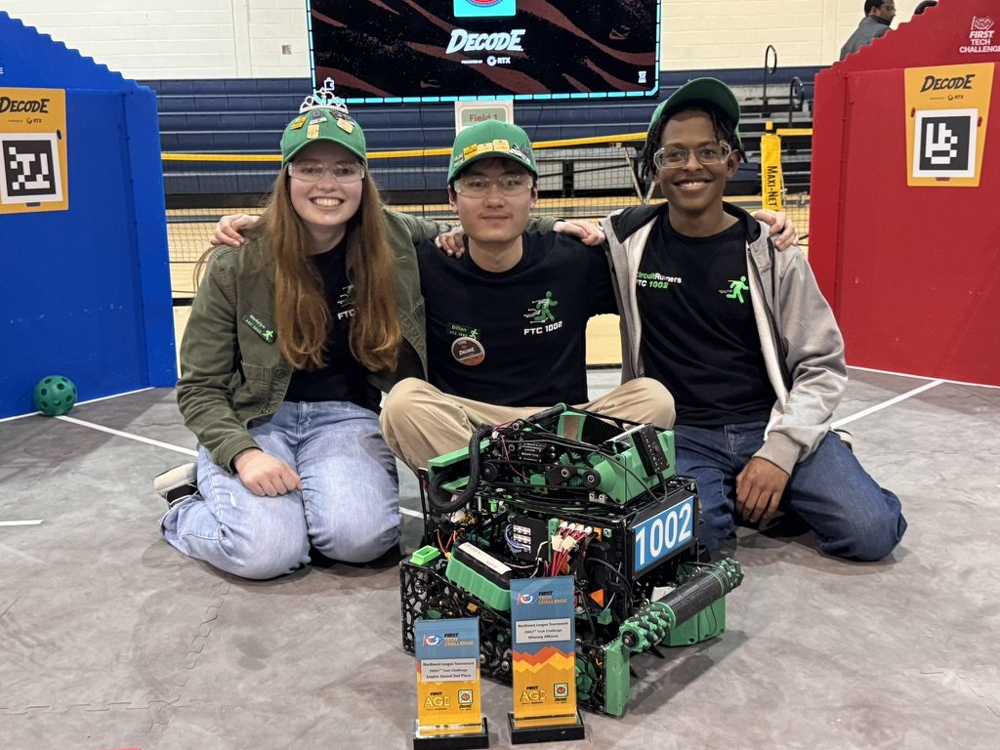

Recognition
Awards & Honors
Academic Honors
2025, 2026
AP Scholar with Distinction
College Board recognition for strong performance across multiple AP exams.
2024
AP Scholar with Honor
College Board recognition for strong performance across AP exams.
2025
College Board National Recognition Award
Recognition through the College Board National Recognition Program for academic achievement.
2024
College Board National African American Recognition Award
Recognition for academic achievement through the College Board National Recognition Program.
2024
Community Service Honor Society
Wheeler High School recognition for commitment to community service.
2024, 2026
Varsity Letters: Orchestra and Academics
Wheeler High School letters recognizing sustained achievement in orchestra and academics.
FIRST Tech Challenge Awards
Team awards earned during Ethan's four seasons with CircuitRunners Robotics Team 1002 Surge, including three FIRST World Championship appearances.

2025–26 · DECODE
- Innovate Award, 2nd Place — FIRST Championship
- Inspire Award, 2nd Place — Georgia State Championship
- Inspire Award, 2nd Place, and Winning Alliance (1st pick) — Northwest League Tournament
2024–25 · INTO THE DEEP
- Inspire Award and Winning Alliance Captain — Athens–Marietta League Tournament
- Competed — Chicago Robotics Invitational and Georgia State Championship
2023–24 · CENTERSTAGE
- Innovate Award — FIRST Championship
- Innovate Award — Alabama State Championship
- Inspire Award and Winning Alliance Captain — Georgia State Championship and West Georgia League Tournament
2022–23 · POWER PLAY
- Innovate Award, 3rd Place — FIRST Championship
- Innovate Award — Alabama State Championship
- Inspire Award and Winning Alliance Captain — Georgia State Championship
- Inspire Award — West Georgia League Tournament